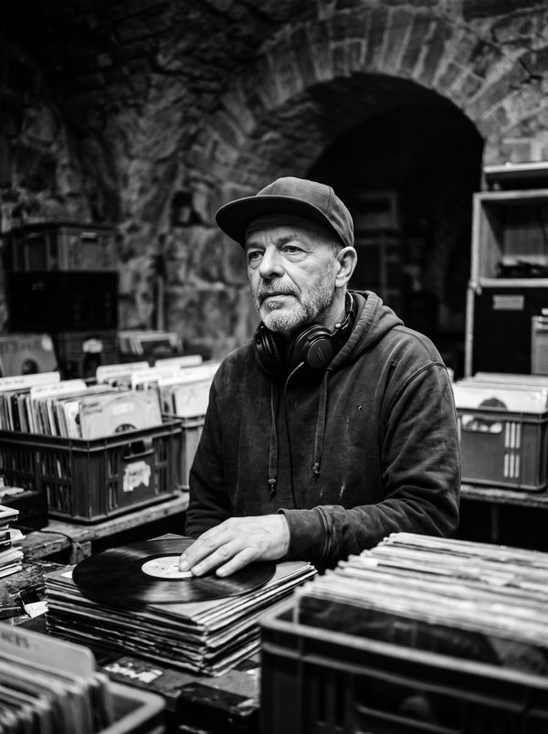

THE BIOGRAPHY: ARCHAEOLOGY OF THE BREAKBEAT
Born Marcus “Warp” Vance in 1978, DJ WARP grew up in the shadow of early hip hop block parties, tape-trading circles, and community radio antennas. While the rest of the world was transitioning to digital files and automated beat-grids, WARP spent thirty unbroken years methodically scouring thrift shops, estate sales, and abandoned warehouse basements from Philadelphia to Porto.
His crate collection—now exceeding 25,000 physical discs—contains some of the rarest uncredited session drummer breaks from 1968 through 1977. Rather than archiving them behind glass, WARP treats every record as living raw matter: cutting, re-pitching, needle-dropping, and phase-shifting drum hits in real time with terrifying mechanical accuracy.

PHILOSOPHY: QUAD-TURNTABLISM & SAMPLING REBELLION
“A computer screen gives you an illusion of rhythm through visual waveforms,” WARP famously declared in a 2018 Wire Magazine interview. “When you touch real vinyl and physical rubber pads, rhythm is kinetic weight. It’s inertia, friction, static electricity, and human heartbeat. When you take away the visual crutches, you finally hear the micro-pocket behind the snare.”
At DRUMTIKS 2026, WARP performs with zero laptops, zero sync buttons, and zero quantization. Every transition is an athletic feat of motor control, pitching live records by touch and trigger-chopping drum layers on a pair of vintage Akai MPC 3000 units loaded with customized EPROM firmware.